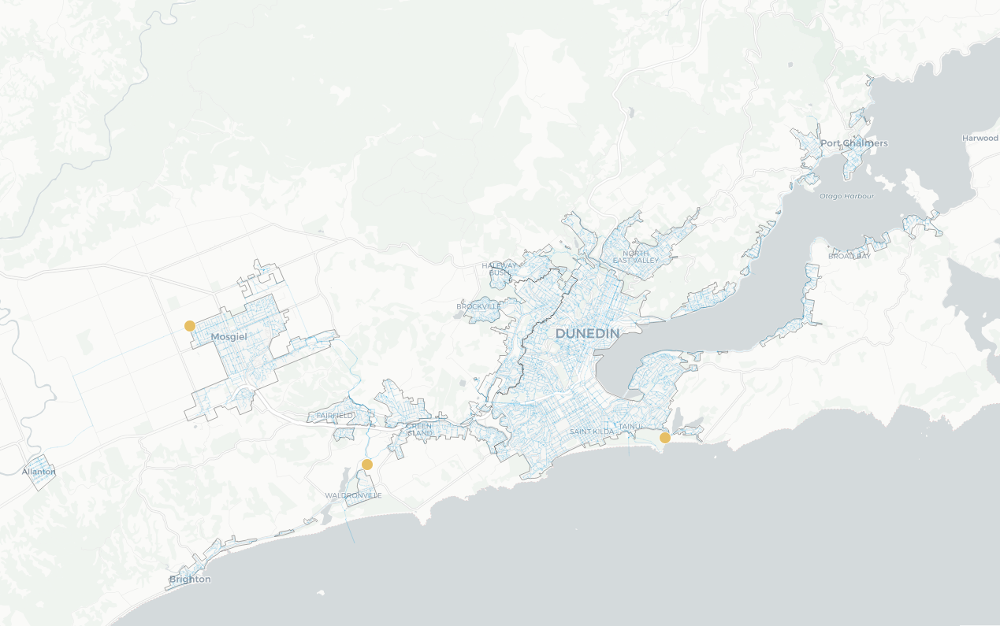

Rows: 93 Columns: 18
── Column specification ────────────────────────────────────────────────────────
Delimiter: ","
chr (1): catchment
dbl (17): Day, 7/1/2021, 8/1/2021, 9/1/2021, 10/1/2021, 11/1/2021, 12/1/2021...
ℹ Use `spec()` to retrieve the full column specification for this data.
ℹ Specify the column types or set `show_col_types = FALSE` to quiet this message.
Rows: 7513 Columns: 5
── Column specification ────────────────────────────────────────────────────────
Delimiter: ","
chr (2): SampleLocation, Result
dbl (2): sars_gcl, copies_per_day_per_person
date (1): Collected
ℹ Use `spec()` to retrieve the full column specification for this data.
ℹ Specify the column types or set `show_col_types = FALSE` to quiet this message.
# Flow with wastedata.waste.flow = data.waste %>%select(SampleLocation, date = Collected, sars_gcl, copies_per_day_per_person) %>%# About 40 rows removed. Might be a good idea to consider later if we're just interested in Dates on Flow.inner_join(data.flow.tidy, by =c('SampleLocation', 'date'))# Define Term dates# https://www.otago.ac.nz/news/events/keydates/archive/index.html# Deciding that O-Week is the official start since it's likely most students would be in Dunedin at that point.# Had to use Wayback Machine to get SS dates for 2021-22# https://web.archive.org/web/20220319234748/https://www.otago.ac.nz/summerschool/study/keydates/index.htmldata.dates =tibble(date =dmy(c('10/01/22', '24/02/22', '21/02/22', '15/04/22', '26/04/22', '22/06/22', '04/07/22', '27/08/22', '05/09/22', '12/11/22', '09/01/23')),event =c('Summer School Start', 'Summer School End', 'Sem 1 Start', 'Sem 1 Mid Sem-Break Start', 'Sem 1 Resume', 'Sem 1 End', 'Sem 2 Start', 'Sem 2 Mid Sem-Break Start', 'Sem 2 Resume', 'Sem 2 End', 'Summer School Start'))# Visdata.dates %>% knitr::kable(caption ='OTAGO UNI KEY DATES')
OTAGO UNI KEY DATES
date
event
2022-01-10
Summer School Start
2022-02-24
Summer School End
2022-02-21
Sem 1 Start
2022-04-15
Sem 1 Mid Sem-Break Start
2022-04-26
Sem 1 Resume
2022-06-22
Sem 1 End
2022-07-04
Sem 2 Start
2022-08-27
Sem 2 Mid Sem-Break Start
2022-09-05
Sem 2 Resume
2022-11-12
Sem 2 End
2023-01-09
Summer School Start
# Determine which dates we expect to have students.# Define a function which can determine this easily. study_in_session <-function(d){if (length(d) >1) return (sapply(d, study_in_session))# Takes a date and returns True if we expect students to be in session at that time. # Just going to assume for now that the population of Summer School students is negligible. intervals =matrix(nrow =2, byrow = T,c('21-02-22', '22-06-22', '04-07-22', '12-11-22'))any(apply(intervals, 1, function(i) dmy(i[1]) <= d &dmy(i[2]) >= d))}study_in_session(ymd('2022-07-03')); study_in_session(ymd('2022-07-04'))
Now we have all the necessary data all ready to go, fit a first model to determine the concentration of COVID bodies using these dates.

# Split data by locationdata.model =split(data.waste.flow.date, data.waste.flow.date$SampleLocation)# Start with Tahuna since it seems more likely that it will show significance (it's the catchment for basically the whole student population.)data.model$OT_DunedinTahuna %>%ggplot(aes(x = date, y = sars_gcl)) +geom_point(aes(col = students_in_session)) +theme_bw() +labs(title ='Observed Concentration per L in OT_DunedinTahuna',x ='Date', y ='COVID-19 Genome Copies per Litre WW') +scale_x_date(date_breaks ='1 month') +theme(axis.text.x =element_text(angle =30, vjust =0.6),legend.title =element_blank(),legend.position ='top') +scale_color_manual(values =hue_pal()(2), labels =rev(c('School Term', 'Out of Term')))
# For plotting Gam smoother with dates.source('../produce_modelling_summaries.R')fit.tahuna =gam(data = data.model$OT_DunedinTahuna %>%mutate(date.n =as.numeric(date)),# A knot for every month. sars_gcl ~s(date.n, k =11) + students_in_session,family ='quasipoisson')plot.gam_mine(fit.tahuna)[[2]]
This is saying that it is likely there is no significant effect of students on the observed number of genome copies. This I believe makes sense since the number of genome copies is copies per litre, and hence it’s effectively normalised by the amount of water usage which is likely correlated with more students. However, interpretting the coefficient as significant, students being in the area correspond with an increase in observed genome copies per litre of about 82.1%.
It is also interesting to note that the largest spikes in cases seem to be around the beginning of new terms. This is unsurprising if we’re considering the amount of large social events happening around this time.
The next consideration is determine significance in copies-per-litre-per-person-population.
fit.tahuna2 =gam(data = data.model$OT_DunedinTahuna %>%mutate(date.n =as.numeric(date)),# A knot for every month. copies_per_day_per_person ~s(date.n, k =11) + students_in_session,family ='quasipoisson')plot.gam_mine(fit.tahuna2)[[2]]
What should’ve been obvious is that the copies-per-litre-per-person is simply a scale factor of the sars_gcl value. Hence the significance and effect is the same.
If we look at Flow now.
data.model$OT_DunedinTahuna %>%ggplot(aes(x = date, y = daily_flow_m3)) +geom_point(aes(col = students_in_session)) +theme_bw() +labs(title ='Observed Flow (m3) in OT_DunedinTahuna',x ='Date', y ='Daily Flow (m3)') +scale_x_date(date_breaks ='1 month') +theme(axis.text.x =element_text(angle =30, vjust =0.6),legend.title =element_blank(),legend.position ='top') +scale_color_manual(values =hue_pal()(2), labels =rev(c('School Term', 'Out of Term')))
# Should ignore these outlying observationsfit.tahuna.flow =gam(data = data.model$OT_DunedinTahuna %>%mutate(date =as.numeric(date)),# 5 knots to account for seasonal variation. daily_flow_m3 ~s(date, k =5) + students_in_session,family ='quasipoisson')plot.gam_mine(fit.tahuna.flow)[[2]]
So after removing the outlying observations, there appears to be little to no effect of students being in the school term and the amount of flow entering the waste water catchment.
Summary
From what I can gather, it seems like there is still too little data to support a model for students leaving over the school term. Since we don’t have the flow data for the past 2-3 months (which would be useful), nor much data between November and December of 2021, there is too little data to arrive at any conclusions of Student effects on Flow or Concentration of Genome Copies per L.